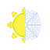

Oberon
Oberon, o Rei das Fadas, Rei do Verão e Senhor do Inverno, Comanda as cortes do Verão e do Inverno, sendo o Senhor absoluto das fadas.
Quando é o Rei do Verão, é Justo e Honrado
Quando é o Senhor do Inverno, é Impiedoso e Cruel
O Rei do Verão é Leal e Bom
O Senhor do Inverno é Neutro e Mau
Seu Símbolo é metade de um Disco Solar e metade de um Floco de Neve
Em suas duas formas, sua arma favorecida é a Espada Longa
- Portfólio
- Fadas
- Verão
- Inverno
- Domínios do Rei do Verão
- Sun
- Good
- Nobility
- Fire
- Domínios do Senhor do Inverno
- Darkness
- Water
- Destruction
- Evil
Titania
Titania, a Rainha das Fadas, Rainha da Primavera, Senhora do Outono e esposa de Oberon, senhora absoluta das Fadas
Quando é a Rainha da Primavera, é Dedicada aos cuidados e a fertilidade
Quando é a Senhora do Outono, é Dedicada aos Estudos e a morte
A Rainha da Primavera é Caótica e Boa
A Senhora do Outono é Leal e Má
Seu Símbolo Sagrado é uma um girassol e uma folha seca
- Portfólio
- Fadas
- Outono
- Primavera
- Domínios da Rainha da Primavera
- Healing
- Good
- Chaos
- Earth
- Domínios do Senhora do Outono
- Knowledge
- Air
- Trickery
- Magic

Nuada
O Príncipe das Fadas é Filho de Oberon e Titania, Nuada é o Príncipe de Arcádia, Nuada Vive pelo combate e espera, um dia, liderar os exércitos de Arcádia em batalha contra o plano material
O Príncipe Nuada é Neutro
Seu Símbolo Sagrado é uma lança e uma espada cruzadas
Sua arma favorecida é a Lança
- Andarilhos
- Guerreiros
- Fadas
Portfólio
- War
- Strength
- Travel
- Destruction